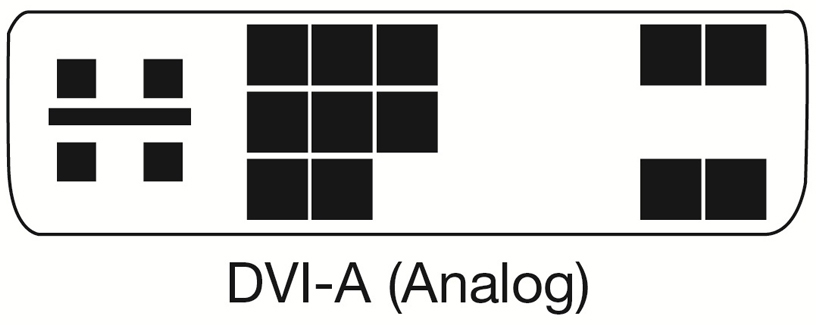

- developed by IMB


- RS-232
- DE-9
- developed by IBM


- Predecessor of DB-25 port


- LPT


(Blue) = Line-in
(Green) = Line-out
(Red) = Microphone
(Orange) = Center Subwoofer
(Black) = Rear Speakers
(Gray) = Side Speakers


- Phono
(Red) = Analog Audio Right
(White) = Analog Audio Left
(Yellow) = Composite Analog Video
(RCA Color Code list


- Digital Coaxial uses RCA connector
- Analog Coaxial uses BNC (Bayonet Neil-Concelman) connector


- has 16 channels


- Carries analog video signal which supports 648X480 resolution


- Sigle-Link offers 1.6Gbps bandwidth, supports up to 1920X1200 (FHD 16:10) resolution at 60Hz refresh rate
- Dual-Link offers 2Gbps bandwidth (parallel), supports up to 2560X1600 (QHD 16:10) resolution at 60Hz refresh rate
-
 - DVI-D (Digital)
- DVI-D (Digital) -
 - DVI-I (Integrated: Analog and Digital)
- DVI-I (Integrated: Analog and Digital) -  - DVI-A (Analog)


- Single-Link only 1.6Gbps bandwidth, supports up to 1920X1200 (FHD 16:10) resolution at 60Hz refresh rate


- 1.4 supports 3840 x 2160 pixels (4K) and 7680 x 4320 (8K)

- 1.1 (2560 X 1600)
- 1.2 (4096 X 2160 (4K))


- HDMI 2.0 can carry digital video up to 4090x2160 (4K studio) and 32 audio channel
- HDMI Connector Types

- (Type A) The plug (male) connector outside dimensions are 13.9 mm × 4.45 mm, and the receptacle (female) connector inside dimensions are 14 mm × 4.55 mm.[6](§4.1.9.2) There are 19 pins, with bandwidth to carry all SDTV, EDTV, HDTV, UHD, and 4K modes.[6](§6.3) It is electrically compatible with single-link DVI-D
- (Type B) This connector is 21.2 mm × 4.45 mm and has 29 pins, carrying six differential pairs instead of three, for use with very high-resolution displays such as WQUXGA (3840×2400). It is electrically compatible with dual-link DVI-D, but has not yet been used in any products.[61] With the introduction of HDMI 1.3, the maximum bandwidth of single-link HDMI exceeded that of dual-link DVI-D. As of HDMI 1.4, the pixel clock rate crossover frequency from single to dual-link has not been defined
- (Type C) This Mini connector is smaller than the type A plug, measuring 10.42 mm × 2.42 mm but has the same 19-pin configuration.[6](§§4.1.9.4,4.1.9.6) It is intended for portable devices.[4][6](§4.1.1)[62] The differences are that all positive signals of the differential pairs are swapped with their corresponding shield, the DDC/CEC Ground is assigned to pin 13 instead of pin 17, the CEC is assigned to pin 14 instead of pin 13, and the reserved pin is 17 instead of pin 14.[6](§4.1.10.5) The type C Mini connector can be connected to a type A connector using a type A-to-type C cable
- (Type D) This Micro connector shrinks the connector size to something resembling a micro-USB connector,[62][63][64] measuring only 5.83 mm × 2.20 mm[6](fig. 4–9) For comparison, a micro-USB connector is 6.85 mm × 1.8 mm and a USB Type-A connector is 11.5 mm × 4.5 mm. It keeps the standard 19 pins of types A and C, but the pin assignment is different from both
- (Type E) The Automotive Connection System[66] has a locking tab to keep the cable from vibrating loose and a shell to help prevent moisture and dirt from interfering with the signals. A relay connector is available for connecting standard consumer cables to the automotive type.


- USB type-A 2.0 (1.5Mbit/s - 480 Mbit/s = 60MB/s)
- USB type-A 3.0 (5Gbit/s = 640MB/s) (blue)
- USB type-A 3.1 (10Gbit/s = 1.2GB/s) (blue)
- USB type-A 3.2 (20Gbit/s = 2.4GB/s) (blue)
- USB type-B 1.0 (1.5Mbit/s - 12 Mbit/s = 1.5MB/s)
- USB type-B 2.0 (1.5Mbit/s - 480 Mbit/s = 60MB/s)
- USB type-B 3.0 (5Gbit/s = 640MB/s) (blue)
- USB type-B 3.1 (10Gbit/s = 1.2GB/s) (blue)
- USB type-C 3.1 (10Gbit/s = 1.2GB/s)
- USB type-C 3.2 (20Gbit/s = 2.4GB/s)
- USB type-C 4.0 (40Gbit/s = 4.8GB/s)


- USB mini type-B 2.0 (1.5Mbit/s - 480 Mbit/s = 60MB/s)


- USB micro type-B 2.0 (1.5Mbit/s - 480 Mbit/s = 60MB/s)
- USB micro type-B 3.0 (5Gbit/s = 640MB/s)
- USB micro type-B 3.1 (10Gbit/s = 1.2GB/s)


- 1 and 2 uses the Mini DisplayPort
- 3 uses USB type C port
- 1.0 (10 Gbit/s = 1.2GB/s)
- 2.0 (20 Gbit/s = 2.4GB/s)
- 3.0 (40 Gbit/s = 5GB/s) compatible with USB type C 4.0

- FireWire 400 uses Firewire type A (6pin)
- FireWire 800 and above uses Firewire type B (9pin)
- 400 (400 Mbit/s = 50MB/s)
- 800 (800 Mbit/s = 100MB/s)
- 1600 (1600 Mbit/s = 200MB/s) (not used by Apple)
- 3200 (3200 Mbit/s = 400MB/s) (not used by Apple)


- Common speeds ...
- 100 Mbit/s = 1.2MB/s
- 1000 Mit/s = 125MB/s
- 10 Gbit/s = 1250MB/s

.jpg)
 Plug.jpg)
- PATA (Parallel Attachement)
- desingled in 1986 (deprecated in 2003)
- 66 | 100 | 133 MB/s


- SATA Power Port
- SATA 1 (150 MB/s)
- SATA 2 (300 MB/s)
- SATA 3 (600 MB/s)
- SATA Power port replaces the MOLEX port


-
-
- there are M.2 SSDs supporting both B and M keys

- also can be used as an USB port
- STAT speed (150 | 300 | 600 MB/s)
- USB speed (60 | 640 MB/s)


- Designed for enterprise use (more reliable)
- speed up to 22.5Gbit/s = 2800MB/s

- Speed (133 | 266 | 533 MB/s)

- PCIe 1.0 (x1 = 250MB/s) (x16 = 4GB/s)
- PCIe 2.0 (x1 = 500MB/s) (x16 = 8GB/s)
- PCIe 3.0 (x1 = 985MB/s) (x16 = 15.8GB/s)
- PCIe 4.0 (x1 = 1.97GB/s) (x16 = 31.5GB/s)
- PCIe 5.0 (x1 = 3.94GB/s) (x16 = 63GB/s)
- PCIe 6.0 (x1 = 7.5GB/s) (x16 = 120GB/s)
- Card size and version can be mixed (hardware will run the lowest config)